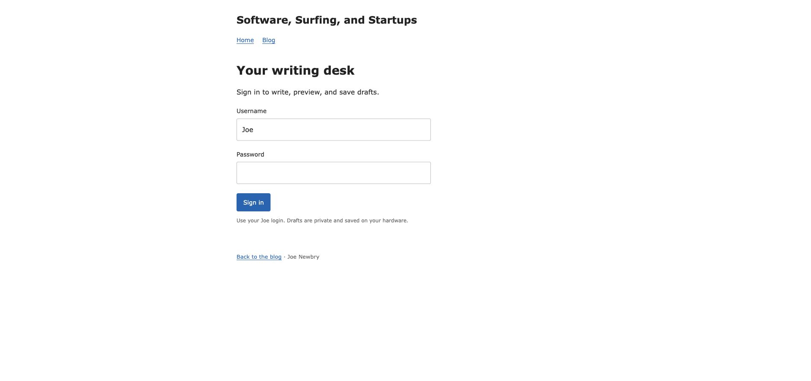

September 8, 2026 · Branch codex/private-blog-editor-20260908 · Existing blog typography preserved.

Authenticated desktop/mobile editor and preview captures follow the live deployment. Articles remain unpublished; real publishing is covered by mocked integration tests only.